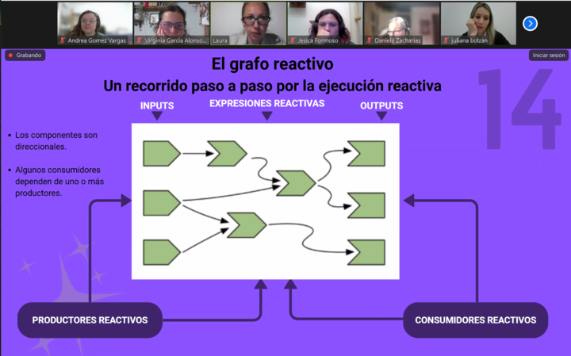
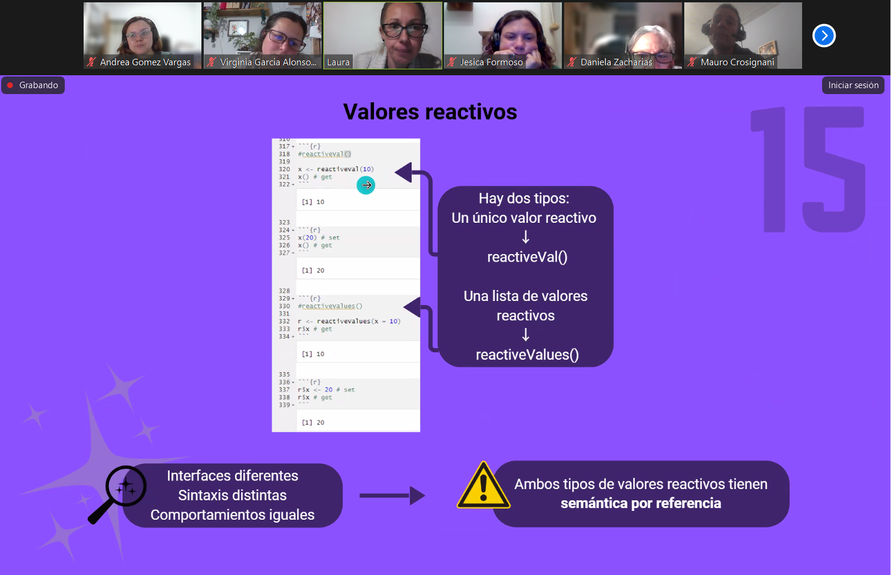
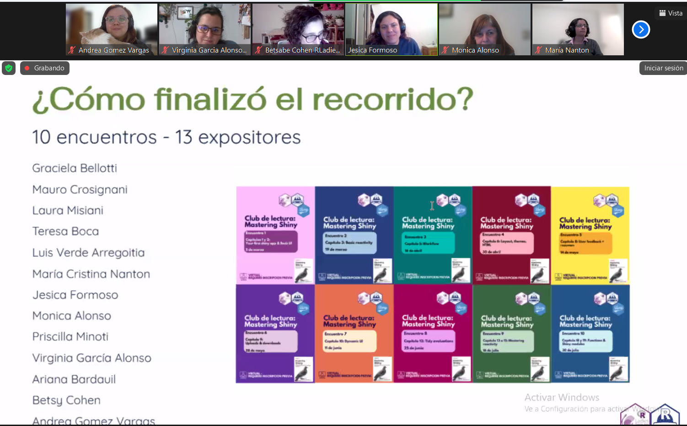

Have you ever wanted to read Mastering Shiny but kept postponing it for “when things calm down”? So did we! At R-Ladies Buenos Aires and R en Buenos Aires, many of us had Mastering Shiny sitting on our virtual shelves, always waiting for the right moment. After months (okay, maybe years) of good intentions and no progress, we realized we needed a push, and that push came from the power of community.
From Solo Intentions to Collective Learning
There is an African proverb that says, If you want to go fast, go alone. If you want to go far, go together. We decided to turn individual intentions into collective learning. Instead of trying to read the book on our own, we organized a community-based reading club: one where we could support each other, share our doubts, and celebrate our progress. Our goals were simple. We wanted to create a friendly, welcoming environment for learning Shiny, break down the book into manageable chunks, and make space for everyone, regardless of their experience, to learn and lead.
How We Organized the Reading Club


We organized the club around ten meetings, which took place between March and July. Although we initially planned to read the entire book, we decided that a shorter, time-bound version would be more realistic and sustainable for the organizing team and its participants. We began planning and organizing this large-scale activity in September 2024.
All sessions were held online, lasting between 60 and 90 minutes. Each one was led by a different person (or pair), who walked us through the content and exercises of the assigned chapters.
There was no expectation of being an expert. In fact, we explicitly encouraged people with little or no prior Shiny experience to join and to lead (and they did!). The only guideline was to read the chapters, try the exercises, and come ready to share. Presenters would explain what they understood from the chapters, highlight key concepts, and guide us through the exercises. Then the magic happened: we’d collectively fill in the gaps, ask questions, offer alternatives, and learn from one another.
Most presenters created slides or notebooks to guide their sessions (though this wasn’t mandatory). We collected all those materials in this public GitHub repository, with a variety of formats and styles. We deliberately avoided imposing a specific format as we didn’t want technical barriers to stop anyone from sharing. Eventually, we plan to curate and organize the materials to make them easier to reuse, especially for Spanish-speaking learners. We believe there’s real added value in having community-built learning materials in Spanish.
Over time, participants started to share the Shiny apps they were building on their own. We added a small “Show and Tell” section to the beginning of some meetings, where people presented their work-in-progress and received feedback and encouragement. It was a space full of mutual support, curiosity, and honest learning.

Although we recorded the sessions, we decided to make them accessible only to attendees. This was different from our chapters’ usual practice, but we wanted to keep the sessions informal, comfortable, and pressure-free — more like a study group than a workshop. This allowed everyone to feel safe sharing unfinished work, asking questions, and making mistakes.
Reflections and Lessons Learned
Throughout the series, different people volunteered to lead the sessions. These volunteers included academics and industry professionals with a variety of backgrounds and levels of experience with R. Each volunteer brought their own style and perspective to the sessions, and all of them did a fantastic job. Although a small core group participated in most sessions, many others joined according to their interests or availability.
We were surprised to have new community members who took advantage of the virtual format to join us from other countries and cities in Argentina. This allowed us to break down the barriers of physical presence and discuss topics of interest from different professional areas in Spanish.
Looking ahead, one idea for a future iteration is to organize the sessions around building a single Shiny app together. We believe this could help sustain engagement, make the learning more tangible, and give participants the chance to immediately see how the book’s concepts connect in practice.
One of the most rewarding aspects of the book club was hearing what participants took away from the experience. Beyond Shiny itself, people highlighted the joy of learning together, the responsibility of having regular meetings, and the warmth of the community. By the end of the club, several participants left feeling motivated and thinking of strategies to improve their work by creating a Shiny app or exploring a topic to take their first steps with a dashboard.
Here are some of their reflections (translated from Spanish):
“The format of coming together to analyze the chapters of a book with technical content seemed brilliant to me. It opens up an horizontal learning space that is very enriching.”
“I really liked that everyone shared everything, holding nothing back, and explained what they had understood—whether from prior experience or from their own research on the chapter’s content. They made it very enjoyable and not too heavy, so I was able to attend all the sessions”
“So much! Not only everything related to Shiny, but also the joy of sharing these meetings with such amazing people—both presenting and exchanging doubts or knowledge.”
Wrapping up
This reading club wasn’t just about working through a technical book. It was about carving out time for learning, growing confidence, building apps (and community!), and showing that you don’t need to know everything to lead or participate. If you’ve also been meaning to read Mastering Shiny, maybe this is your sign to gather your group and start together. Because when we learn together, we go further and we have more fun along the way.
You can reach out to R-Ladies Buenos Aires & R in Buenos Aires through the following:

Instagram:https://www.instagram.com/rladiesba
Website: https://rladiesba.netlify.app/

Linkedin: https://www.linkedin.com/company/r-en-buenos-aires
Instagram: https://www.instagram.com/renbuenosaires
Website: https://renbaires.github.io/
How do I Build an R User Group?
R Consortium’s R User Group and Small Conference Support Program (RUGS) provides grants to help R groups organize, share information, and support each other worldwide. We have given grants over the past four years, encompassing over 76,000 members in over 90 user groups in 39 countries. We would like to include you! Cash grants and meetup.com accounts are awarded based on the intended use of the funds and the amount of money available to distribute.